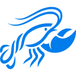

AionUi alternatives (2026)
AionUi is a personal agents tool: Open-source desktop cowork app that gives a GUI to CLI agents like Claude Code, Codex, OpenCode and others. Pricing, as the maker states it: Open source. Its GitHub repo has 33,580 stars. We found 82 tools in the directory that do overlapping work (coding in the terminal, controlling a computer, personal assistance); 47 of them are open source and 12 list a free or freemium plan. Below are the 10 closest, ranked by how many tasks and sub-tasks they share with AionUi, then by GitHub stars.
Updated
Quick answer: the top picks on this list, in this page's order, are Hermes One, ClawX and Memmy, out of 10 tools ranked below.
Ranked list All 10, in this page's order. Pricing as the maker states it; GitHub stars as recorded on each listing; blank means we don't have it.
| # | Tool | Pricing | Best for | Open source | GitHub stars |
|---|---|---|---|---|---|
| 1 | Hermes One | Open source | Control a computer | Yes | 14,427 |
| 2 |  ClawX | Open source | Yes | 7,604 | |
| 3 | Memmy | Open source | Give agents memory | Yes | 2,125 |
| 4 | Open source + cloud | Control a computer | Yes | 67,210 | |
| 5 | Hermes WebUI | Open source | Yes | 19,001 | |
| 6 | OpenWorker | Open source | Control a computer | Yes | 18,561 |
| 7 | Open source | Control a computer | Yes | 15,571 | |
| 8 | Open source | Control a computer | Yes | 6,371 | |
| 9 | Open source | Control a computer | Yes | 6,119 | |
| 10 | 5ire | Source-available | Control a computer | Source-available | 5,373 |
Verified on : every tool link on this page was checked by our daily link check. No paid placements.
- Hermes One (Open source): Community desktop app for installing, configuring and chatting with Hermes Agent without managing it from the terminal. Consider it because it also covers rules, skills and config.
- ClawX (Open source): Desktop app that puts a graphical interface on OpenClaw agents so you can set up and run them without the terminal. Consider it because it does the same job with a different approach (open source).
- Memmy (Open source): A local-first personal AI agent with a self-evolving long-term memory that its desktop app, CLI and your other AI agents can all share. Consider it because it also covers memory and local and self-hosted.
 AnythingLLM (Open source + cloud): Local-first desktop and server app for chatting with your documents, running agents and connecting any LLM. Consider it because it also covers RAG and documents and local and self-hosted; it has more GitHub stars (67,210 vs 33,580).
AnythingLLM (Open source + cloud): Local-first desktop and server app for chatting with your documents, running agents and connecting any LLM. Consider it because it also covers RAG and documents and local and self-hosted; it has more GitHub stars (67,210 vs 33,580).- Hermes WebUI (Open source): Lightweight web and mobile interface for the Hermes Agent with full parity with its CLI experience. Consider it because it also covers mobile and remote control.
- OpenWorker (Open source): Andrew Ng's open-source desktop coworker that turns requests into finished work in your files, Slack and calendar, asking before important actions. Consider it because it also covers agents in chat apps.
 Eigent (Open source): Open-source cowork desktop app that runs multi-agent workflows locally. Consider it because it also covers workflow automation and multi-agent orchestration.
Eigent (Open source): Open-source cowork desktop app that runs multi-agent workflows locally. Consider it because it also covers workflow automation and multi-agent orchestration. DeepChat (Open source): Open-source, local-first AI agent desktop client with MCP, skills, ACP support and remote control from messaging apps. Consider it because it also covers local and self-hosted and rules, skills and config.
DeepChat (Open source): Open-source, local-first AI agent desktop client with MCP, skills, ACP support and remote control from messaging apps. Consider it because it also covers local and self-hosted and rules, skills and config. LobsterAI (Open source): NetEase Youdao's desktop agent for data analysis, slides, documents and web research. Consider it because it also covers RAG and documents and research and reports.
LobsterAI (Open source): NetEase Youdao's desktop agent for data analysis, slides, documents and web research. Consider it because it also covers RAG and documents and research and reports.- 5ire (Source-available): Cross-platform desktop AI assistant and MCP client with a local knowledge base and support for major model providers. Consider it because it also covers RAG and documents and local and self-hosted.
AionUi vs alternatives at a glance
| Tool | Pricing | Open source / licence | GitHub stars | Good for |
|---|---|---|---|---|
| AionUi | Open source | Apache License 2.0 | 33,580 | coding in the terminal, controlling a computer |
| Hermes One | Open source | MIT | 14,427 | coding in the terminal, controlling a computer |
| ClawX | Open source | Yes | 7,604 | coding in the terminal, personal assistance |
| Memmy | Open source | Yes | 2,125 | coding in the terminal, personal assistance |
| Open source + cloud | MIT | 67,210 | controlling a computer, personal assistance | |
| Hermes WebUI | Open source | MIT | 19,001 | coding in the terminal, personal assistance |
| OpenWorker | Open source | MIT | 18,561 | controlling a computer, personal assistance |
| Open source | Apache License 2.0 | 15,571 | controlling a computer, automating workflows | |
| Open source | Yes | 6,367 | controlling a computer, automating workflows | |
| Open source | MIT | 6,119 | controlling a computer, personal assistance | |
| 5ire | Source-available | No | 5,372 | controlling a computer, personal assistance |
More: AionUi listing · All personal agents tools · All alternatives pages
Related searches: AI computer-use agents · Open-source personal AI assistants
Alternatives are picked from directory data only: same category plus shared tasks and sub-tasks. Pricing is as each maker states it; GitHub stars as recorded on each listing.